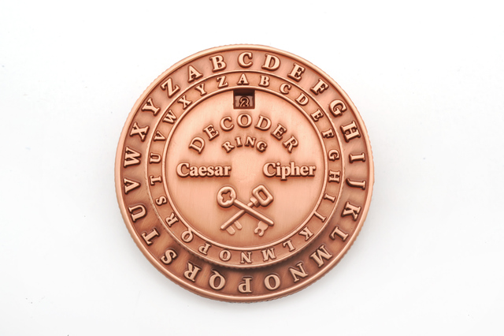

|  |
Caesar Cipher merupakan salah satu bentuk kriptografi yang merupakan salah
satu model dari bentuk Kriptografi Simetris
atau konvensional.
Symetric Cryptography atau Kriptografi Simetris yaitu kunci yang digunakan untuk
melakukan enkripsi dan dekripsi adalah sama.
Merupakan metode enkripsi yang dilakukan pada zaman Julius Caesar.
Hanya dipergunakan pada Alfabet baik huruf kapital maupun huruf kecil. Sehingga ketika proses yang
dilakukan pada angka maka hal tersebut tidak dapat dilakukan.
Cara enkripsi dari metode ini yaitu dengan memutar sejauh tiga langkah. Try It! |